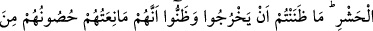
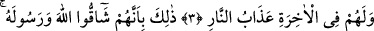

HER ŞEY
ALLAH’I TESBİH EDER
Bismillâhirrahmânirrahîm
1. Göklerde ve yerde olanların hepsi Allah’ı tesbih etmektedir. O, üstündür,
hikmet sâhibidir.
2. Ehl-i kitaptan inkâr edenleri, ilk sürgünde yurtlarından çıkaran O’dur. Siz
onların çıkacaklarını sanmamıştınız. Onlar da kalelerinin, kendilerini Allah’tan
koruyacağını sanmışlardı. Ama Allah (O’nun azâbı), onlara beklemedikleri yerden
geliverdi. O, yüreklerine korku düşürdü; öyle ki evlerini hem kendi elleriyle, hem
de müminlerin elleriyle harap ediyorlardı. Ey akıl sâhipleri! İbret alın.
3. Eğer Allah onlara sürgünü yazmamış olsaydı, elbette onları dünyada (başka
şekilde) cezâlandıracaktı. Âhirette de onlar için cehennem azâbı vardır.
4. Bu, onların Allah’a ve Peygamberine karşı gelmelerinden dolayıdır. Kim
Allah’a karşı gelirse bilsin ki Allah’ın cezâlandırması çetindir.
“Göklerde ve yerde olanların hepsi Allah’ı tesbih etmektedir.” Tesbih, Allah’ın her
çeşit çirkinlikten uzak ve ilahlık şanına yakışmayan her şeyden temiz ve yüce olduğuna
inanmak ve itiraf etmek demektir. Tesbih, kalp, dil ve hal ile olur. Kalb ile olan tesbih,
ülûhiyetine yakışmayan her şeyden Allah’ın yüce olduğuna inanmaktır. Çünkü tef’îl
bâbından ve ölçüsünden gelen masdarların mânâlarından biri de, bir şeye inanmak ve
ona hükmetmektir. Temcid ölçüsünde gelen ta’zim ve tevhîd gibi kelimeler de böyledir.